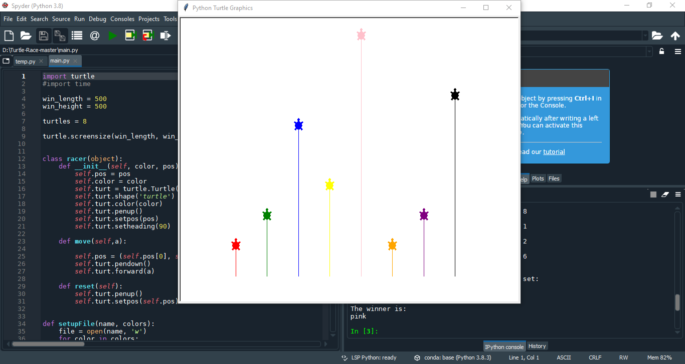
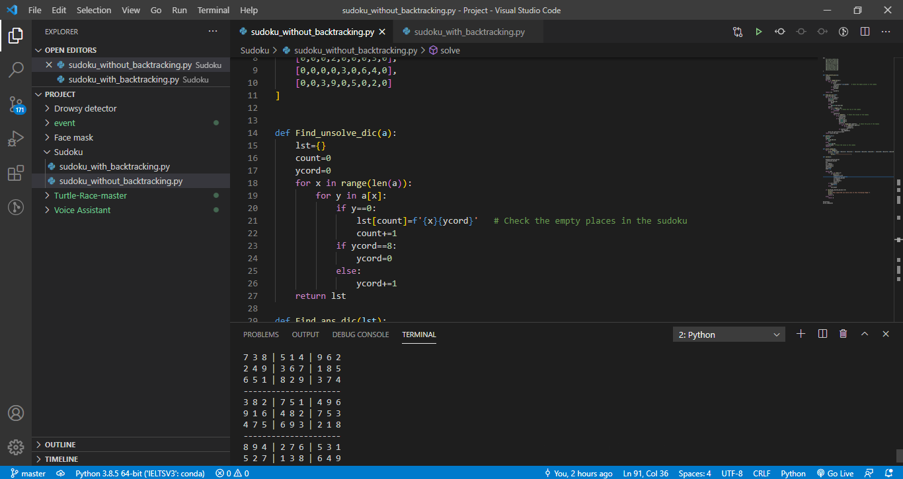
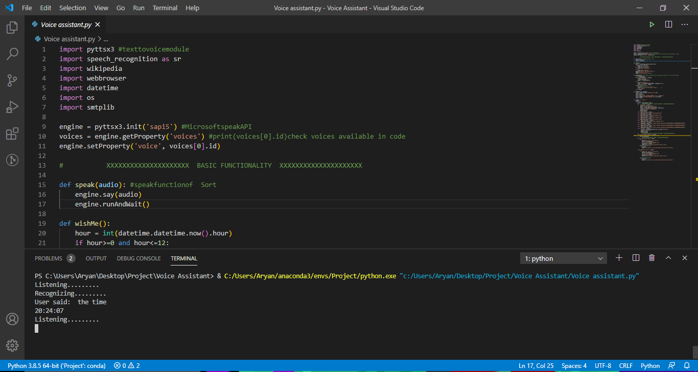
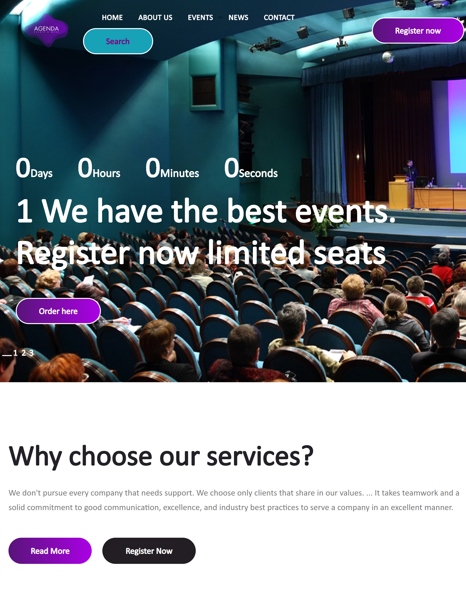
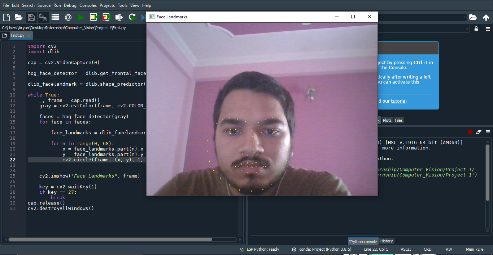
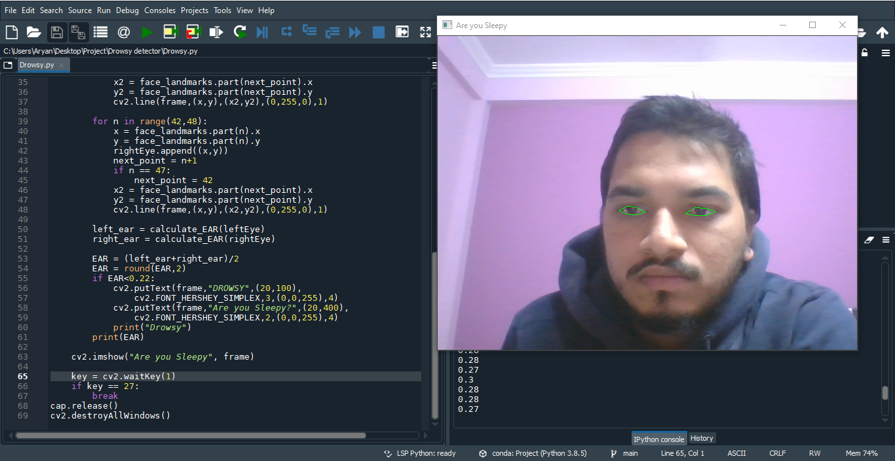
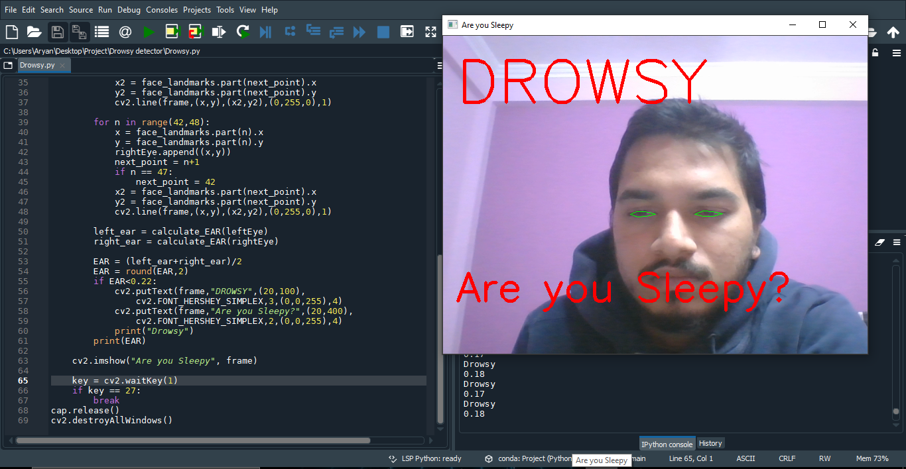
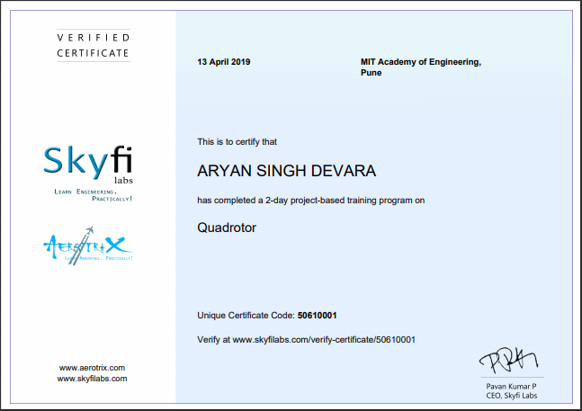

Intro
I am a person who is ambitious and determines. I like to learn new stuff as it always finds a way to intrigue me. I always look for the opportunity to make my future better, than in my past.
I am a self-taught learner who likes to explore new fields. I have taught myself photo and video editing. I have learned Java on my own with the help of the telusko channel. I have taken a free web development course on CS50's Web Programming with Python and JavaScript. I am currently learning and Exploring node.js with express.
I have earned 5 Star Golden Badge in Java, Python and Problem Solving in hackerrank.
Key expertise:
JAVA
Node
Python
Postman
Django
PostgreSQL
Flask
GitHub
Hobbies:
Photo Editing
Guiter
Video Editing
Badminton
Basketball
Project
Turtle Race Master
Skill Required: Python
Object-Oriented Programming
Fuzzy Logic
Algorithm

Creating a turtle race simulator from scratch which uses fuzzy inputs so that max membership function turtle wins, where else it also shows the crisp output. It helps us to understand the importance of a fuzzy system in the real world. Its main challenge of doing that project was not to use the fuzzy module in python
Output
Would you like to play again Yes
write the input fuzzy value for the turtle 1
write the input fuzzy value for the turtle 2
write the input fuzzy value for the turtle 5
write the input fuzzy value for the turtle 3
write the input fuzzy value for the turtle 8
write the input fuzzy value for the turtle 1
write the input fuzzy value for the turtle 2
write the input fuzzy value for the turtle 6
The actual crisp value for the given fuzzy set:
4.448
The winner is:
pink
GitHub Link --->>>
Sudoku Solving Algorithm
Skill Required: Python
Algorithm
Data Structure

In this project, I have created two algorithms to solve a Sudoku in which one uses a Backtracking algorithm where else another code doesn't use a backtracking algorithm.
GitHub Link --->>>
Voice Assistant
Skill Required: Python
Operating System
Audio Processing

It was a project in which the system interacts with the user on an audio basis and helps the user to do the task. It is the enhanced version of other relatable assistants as here we even have access to the operating system
GitHub Link --->>>
Event Site
Skill Required: Python
Django
Bootstrap
Object-Relational Mapping

In this project, I have created an Event site using bootstrap and give it a server using Django local server.
Face Mask
Skill Required: Python
Computer Vision
Video Processing

It was a project in which I learn and understand how to use computer vision so that we create landmarks on the face through which we can do many interesting things.
We use shape_predictor_68_face_landmarks.dat for our project which has been trained by ibug database which is over 5000 over database images so that's why it is very accurate and fast.
GitHub Link --->>>
Drowsy Detection
Skill Required: Python
Computer Vision
Video Processing
Algorithm


In this Project, we moved one step ahead of the Face Mask and created a drowsy detection system. With the help of the landmarks on the eyes, we created and find the value of the eye aspect ratio. which help us to find that whether the person is sleepy or not
GitHub Link --->>>
Fire alarm mechanism
Skill Required: PCB Design
Op-Amp Operation
We learn how to use an op-amp, and with the help of a thermister we could actually generate a fire alarm mechanism which detects heat
Street light timing mechanism
Skill Required: 8051 Programming
Algorithm
We learn how to use an 8051 programming chip to create a timing mechanism which can be used for street lights
Workshop
Quadrator

It was a two-day workshop in which on the first day we learn the physics of the copter like how the wings lift the plane, Thrust, Drag, Lift, Payload, Roll Motion, YawnMotion, Pitch Motion.
On the second day, we created our own quadra-copter using KK2.1.5 flight microcontroller and even assign a PID system to the copter and at the end, we fly it in the ground.
Bluetooth, voice control car
It was a two-day workshop in which on the first day we learn the basics of Arduino and how it works
On the second day, we coded the Arduino and connect all the circuit and with the help of Arduino Bluetooth Control we creted the Bluetoot and voice control car
Internship
Key Skill: Django
Flask
PHP
Celery
Postman
JSON
Web API
SQLite
PostgreSQL
MongoDB
NoSQL
Nginx
HTML
CSS
Javascript
ORMs

I was part of the internship provided by the Analytics Domain and The main thing that I learn through it was how to learn new skills on our own.
As part of the internship, I was assigned multiple tasks, Such as I have created an eCommerce site for the customer, I have tested some of the sites as well, but The most promising thing that l have done is to create a full-stack website that can be used as an API and as an essay analyzer as well (which is similar to the PTE).